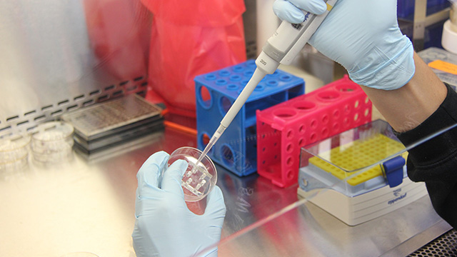
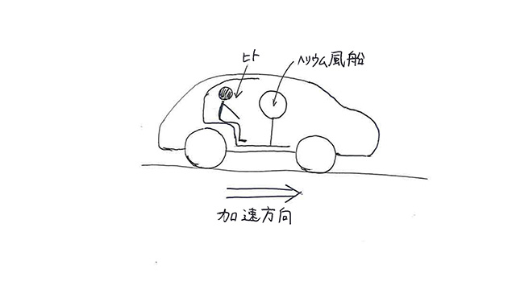
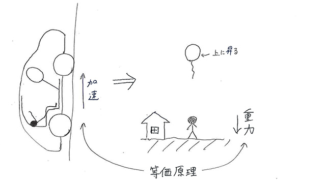

なぜ実験をウリにするの？
「最近の子は‘理科離れ’している」という言葉を初めて耳にしてから結構時間が経ったなと思います。
日本（だけでなく世界で見ても、のようですが）では、ここ十数年の慢性的な課題になっていますね。
そして、ここにきて最近よく目にするようになったのは、
「実験教室」の宣伝です。
よく見ますよね～。
テレビのCMでもそうですし、塾のホームページを見てもそれを謳い文句にしているところが多いです。
ちなみにウチの近所にある小さな教室のガラス窓にもそんな感じの貼り紙がしてありました。
しかし、こういう宣伝文句を見るたびに、私はため息交じりにこう思うのです。
「それ、やり方を間違えると逆効果だよ」と。
私が子どもたちと接していて気になることがあります。
それは、「実験は面白いけど、それ以外は面白くない」という意味の意見がよく聞かれること。
私の経験で言えば、皮肉なことに‘実験をする’ということに大喜びする子どもほど、その傾向が強いのです。
これは非常に悲しい。
おそらく先生は理科的なことに興味を持ってもらいたいがために、そのきっかけとして実験を取り入れているのでしょう。
しかし、結果としては実験のあとに続くはずの子どもたちの興味・関心を引き出せていなかったということになります。
いや、もしかしたら実験の意図自体が知的好奇心を引き出すことにあったのではなく、「実験をしていれば、とりあえず理科授業の体をなしている」という安易な発想から実験を取り入れた可能性もあります。
いずれにしても、多くの現場では「実験が場を盛り上げるショー的要素」として活用されてしまっているのは的外れな想像ではないでしょう。
そのため、子どもたちは楽しい時間が過ぎた後の「なぜそうなるのか」などの考察や「そこから派生してどういうことが学べるのか」など、‘考えること’について意欲的にはなっていないのです（※もちろん子どもたち全員が、ではありませんけれど）。
実験の先にあるもの、または実験の前に考えるべきこと。
実験を採用するからには、「子どもたちにどんなことを考えさせたいか」ということを中心にストーリーを作るべきです。
ウマく活用するには
では、どんなふうに実験を活用したらよいのか。
いくつか提案してみたいと思います。
１．『答え合わせとして実験をする』
‘お題の実験’に対して、どのような結果になるのか、を事前に議論するというもの。
メインはあくまで「議論」です。
議論するということは、「そのようになる理由」に焦点が当たります。
そのため、相手を説得するために知識を総動員し、思考をフル回転させるようになります。
非常に白熱した議論になることでしょう（司会である教師の手腕にもよりますが）。
理科的な興味や思考力を養成するという点では、この時点でほとんど目的は達成されていると言ってよいかもしれません。
＜チョットこぼれ話＞
こういう風に実験もせずああだこうだってシミュレーションすることを「思考実験」といいます。
基本的には‘そんな状況はつくり出すのが難しい’から、実験できないということで頭の中だけで考えるわけです。
有名な例では「アインシュタインの等価原理」。
ざっくり言うと、「‘天体に引っ張られることによって感じる重力’と‘加速する乗り物内で感じる荷重’は、体感上見分けがつかないのだから、同じものとしよう」という内容です。
つまり「重力＝加速度」２つは等価な関係ですよ、ということ。
そこから何が導けるかというと、
「加速する乗り物内の人からは、理論上光が曲がって見えるのだから、大きな天体による強い重力のそばでも光は曲がるんじゃない？」と。
で、実際にアインシュタインが計算した通りの数値で光が曲がることを、観測により実証したのです。
そんなふうにいつでも気軽に実験できる種類のものでない場合に思考実験を用いることが多いのですが、普通に実験できるものでも事前に思考実験するのはとても有効です。
そこには‘こういう風に仮定すると…’という工夫が生まれるからです。
ちなみに、手軽な思考実験を私もやったことがあるので是非見て下さい。
※池村ブログ「夏のつぶやき②（2014/07/30）」
思考実験は、物理の問いだけでなく、「トロッコ問題」や「マリーの部屋」などの哲学的、倫理的な問いを考える際にも登場します。興味がある人はぜひ調べてみて下さい。
２．『必ず理屈を知りたくなる実験をする』
現象の派手さよりも、「え、なんで？？」と思わせる現象こそ、後につながる探究心への好材料になると私は考えます。
そこで、最近の中で私が「これ、メッチャクチャ面白い！」と思った実験を紹介します。
下の図を見て下さい。

車が加速するとき、中の人間は加速度によって後ろのシートに押し付けられるように荷重がかかりますよね？
では、‘ヘリウムの入った風船’を車内に固定したら、加速時に風船はどうなるか？
実は、超意外な結果だったんです。
実際にこれを実験した動画があるので見てみましょう。
どう考えても不思議な現象です。
ちなみにこれは、先に議論してもあまり建設的で活発な議論にならないと思いますので、ちょっと予想させて結果を見て、そこから理屈をああだこうだ議論した方がスムーズにいくでしょう。
皆さんはどう思いますか？
実はこういう風に考えることができます。

あえて車の加速向きを上方向にします。
ここで登場するのは先ほどのこぼれ話に登場した「等価原理」です。
車がこの図の上向きに加速するということは、下向きに重力が発生すると置き換えることができます。
すると、これは私たちが日常目にする状態と一緒です。
すなわち、「地上に人間が固定され、ヘリウム風船は空高く昇っていく」。
なぜ人間は下に、風船は上に…という根本的な原理に関しては、動画でも説明していますが、水中で生じる‘浮力と重力’の大小が関わっています。
ここでちゃっかり浮力の原理なども講義できれば、より生徒の知識欲が高い状態で復習できますし、一挙両得です。
ですが、そこの理解を抜きにしても、加速を重力と置き換えることで日常の風景と対比させ結論を得るというのは、なかなか‘してやったり’というところではないでしょうか。
いずれにせよ、「シンプルだが結果は意外」というような良質のネタをうまく調理することは、実験をうまく活用する方法の一つかと。
３．『手軽な物を用いた実験を紹介する』
紹介する、とはどういうことか。
つまり、「授業の場ではあえてやらない」ということです。
実験がショー化してしまうことの構造的問題として、
「大がかりであること」
「それを先生にやってもらう受け身の姿勢」
ということが考えられます。
本来、実験なんてそこらじゅうに材料は転がっているし、よほど危険なことでない限りは、自分でどんどんやってほしいというのが私の持論です。
＜チョットこぼれ話＞
※以下に挙げるのは良い子は真似しちゃダメな私が子どもの頃の実験です。
①コンセントにフォークを突っ込む（小４時）
→どうなるかは分かりきっているはずなんですが…。怖いもの見たさってやつですかね（汗）。もはや実験ではなく度胸試しです。案の定きっつい電撃が走り、それ以降はやりませんでした。
②10円玉あぶり（中３時）
→炎色反応を知り、銅は綺麗な緑色の炎になるということで、家のガスコンロで実験。お金に手を加えることは違法、なんてことは気にも留めませんでした、はい。そんな意識の低さに天罰が下ったのか、前髪がチリチリに。
③走行中の自転車に強制ロック（小３時）。
→前輪にカギをかけるタイプの自転車に乗っており、ふと魔が差しまして、「走っている最中にカギかけてみたい…」という衝動にかられました。結果はもちろん…前輪を中心に前方一回転。カギを足でかけることのできた自分の器用さと、その無残な結末に、一人声を出して笑ってしまいました（危ない奴）。
一歩間違えば危険ですから、親としては子どもが勝手に実験するのは賛成できないという人もいるでしょう。
ただ、ある程度は危険を伴う経験（すなわち冒険）をしてこなかった人間が大人になったときほど怖い。
例えばケンカで手加減できなかったりとか、ね。
そういう意味では、アホをやりながら気づきを得てほしいわけです。
放っておいてもそういうことをする子どももいれば、冒険を好まない子もいるでしょう。
だからこそ、安全で手軽な実験ならば大人が誘導してあげてもよいと思うんです。
身近にあるペットボトルや工作用紙、割りばしや輪ゴム。
そういったものを使って確かめられるような実験こそ子どもたちに必要な体験です。
大がかりで派手なものばかりでは子どもがお客さんになるだけですよ。
たたでさえ現代の子どもたちの遊び道具はハイテクで受け身になりやすいものが多い。
分解なんてしても絶対に仕組みは分からないし、壊してしまうのがオチです。
昔の遊び道具は分解しても元に戻せるレベルのものが多かったから、そこから構造や原理を自ら学んだりしたものです。
身の周りにそういう単純な遊び道具が少ないのであれば、手軽で安全な実験を、授業ではなく日常に持ち込むというのはアリだと思います。
普段から「自分でやってみる」という気持ちも、科学する心に必要な要素ですから。
４．『実験とは理科だけのものとは思うなかれ』
実演して確かめることを実験というならば、なにも理科という教科に縛られる必要はありません。
例えば数学でも社会でもいいわけです。
社会なら経済の仕組みを体感するためにクラスで役割分担を決めて、売買のシミュレーションをしてみたり。こんなのも立派な実験じゃないですか。
ちなみに数学ならこうとか。
（※理数検証動画池村チャレンジ「九面体の体積は？」）
思考実験も含めれば色んな分野で実験というものを行うことができますね。
というわけで、安易な実験と目的を伴った実験、効果は全く違いますので、消費者の皆さんにはよく考えていただきたいなと思います。